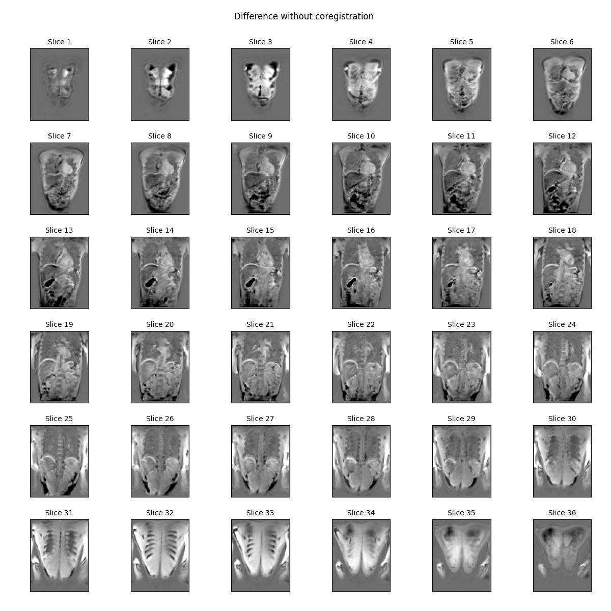

Note
Go to the end to download the full example code.
Pairwise coregistration API#
mdreg includes a harmonized API for pairwise coregistration of 2D images
or 3D volumes with three different packages: ants, skimage and
itk-elastix.
This examples illustrates their usage for the example of pairwise 3D registration.
Setup#
import os
import time
import numpy as np
import mdreg
Load test data
Check alignment#
On the difference image, the effect of breathing motion can be clearly seen as a white line at the edge of the liver:
Coregister with elastix#
We first use elastix to coregister the images:
elastix computation time: 4 seconds.
We used here the default b-spline registration method, but since this is
abdominal motion we used a coarser grid spacing than the
elastix default of 16mm (note: you can use mdreg.elastix.defaults to find
out what the defaults are). Any other defaults can be overridden by
specifying additional keywords.
We check the result by plotting the difference with the coregistered (deformed) moving image:
The results clearly show the effect of the registration: the white line at the top of the liver is gone but the gallbladder is deformed in an unphysical way.
Apart from the coregistered image, the function also returned the transformation parameters. These can be used to deform other images in the same way. As an example, we can check that transforming the moving image does indeed produce the coregistered image:
Difference between coregistered and deformed: 0.0 %
Coregister with skimage#
We could try to improve the elastix coregistration by modifying the parameters, but for the purpose of this tutorial we try another package instead.
skimage has an implementation of the optical flow method for registration
which is wrapped by mdreg with the same API as elastix and ants. Let’s
try it on our problem:
skimage computation time: 2 seconds.
We chose to
use a coarser registration than the default by setting the attachment to a
higher value - 30 instead of the default 15 (note: as in elastix you can
find the default settings by calling mdreg.skimage.defaults).
Plot the difference with the coregistered (deformed) moving image:
This appears to have done a reasonable job at minimizing the difference between the images without creating unwanted deformations.
In skimage.coreg the second return value is the deformation field. As in elastix
we can use it to deform other images in the same way. If we try this on the
moving image, we get the coregistered image again:
deformed = mdreg.skimage.transform(moving, deform)
# Check the difference with the coregistered image
err = 100*np.linalg.norm(deformed-coreg)/np.linalg.norm(moving)
print(f"Difference between coregistered and deformed: {err} %")
Difference between coregistered and deformed: 0.0044718291610479355 %
Coregister with ants#
Let’s run this a final time with the third package wrapped in mdreg -
ants:
t = time.time()
coreg, deform = mdreg.ants.coreg(
moving,
fixed,
type_of_transform='SyNOnly',
)
print(f"ANTs computation time: {round(time.time()-t)} seconds.")
## %%
# We have used default settings for all parameters except the type
# of transform. By default the transform is a two-stage process with affine
# pre-alignment followed by deformable registration. Here we tried deformable
# registration alone, which is more similar to what we have done with elastix.
ANTs computation time: 1 seconds.
Plot the difference with the coregistered (deformed) moving image:
This also appears to have achieved the goal of reducing the main differences without creating unwanted deformations.
The second return value is a path or list of paths to files that hold the parameter values. These can be used to deform other images in the same way. If we deform the moving image, we get the coregistered image again:
deformed = mdreg.ants.transform(moving, deform)
# Check the difference with the coregistered image
err = 100*np.linalg.norm(deformed-coreg)/np.linalg.norm(moving)
print(f"Difference between coregistered and deformed: {err} %")
Difference between coregistered and deformed: 0.000103812686575111 %
Note since ants writes deformation parameters to files, this will leave traces on disk unless you remove these explicitly:
[None, None]
Alternatively, if the transformation is not needed the coreg function can be called with return_transfo=False:
Total running time of the script: (0 minutes 10.599 seconds)